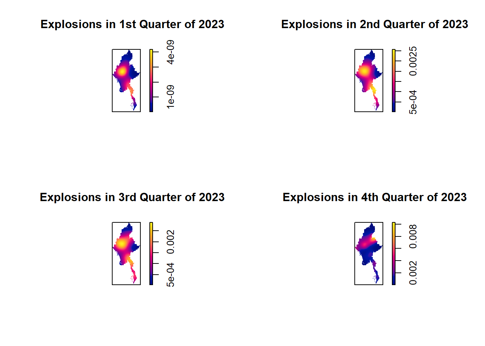
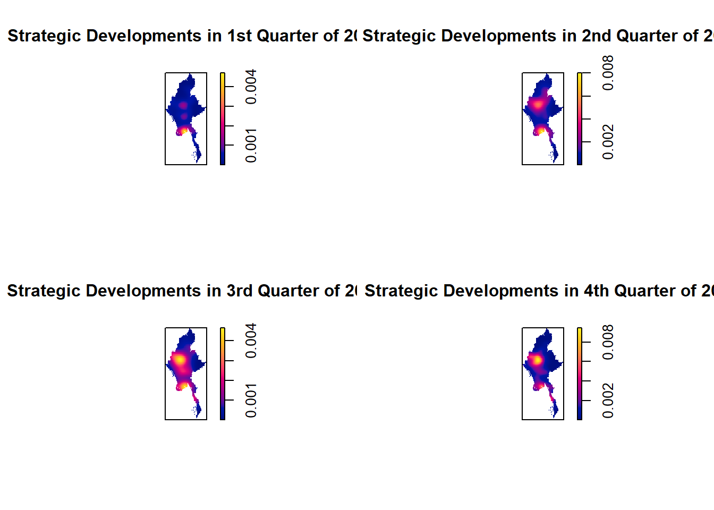
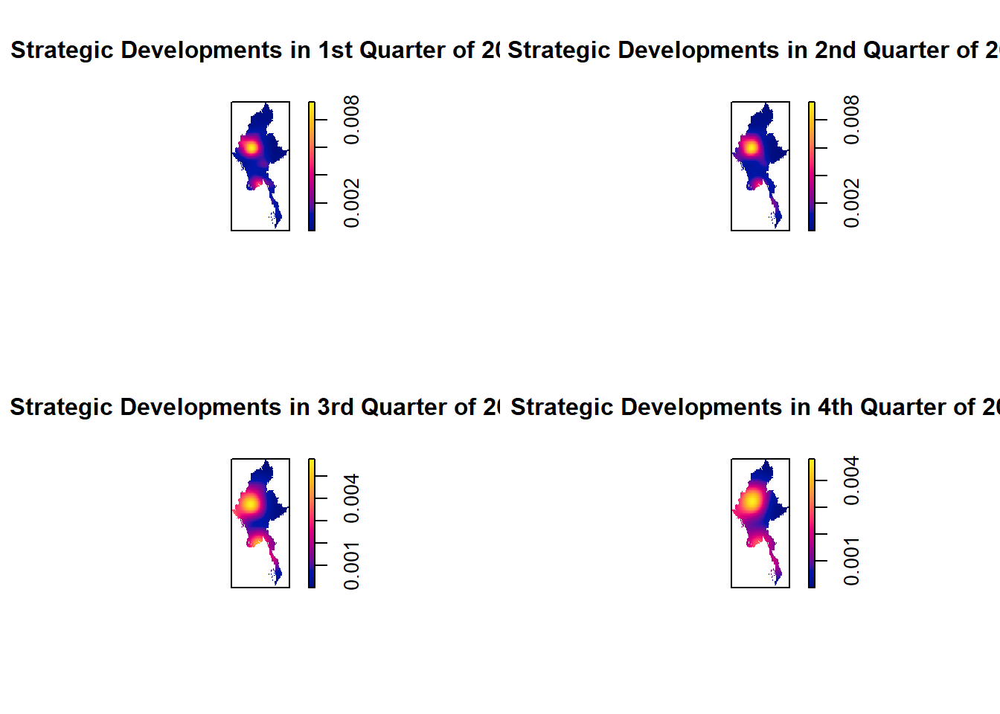
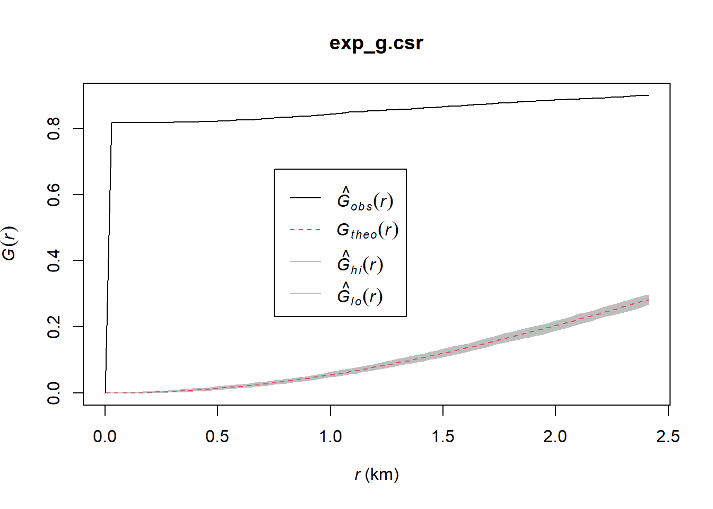
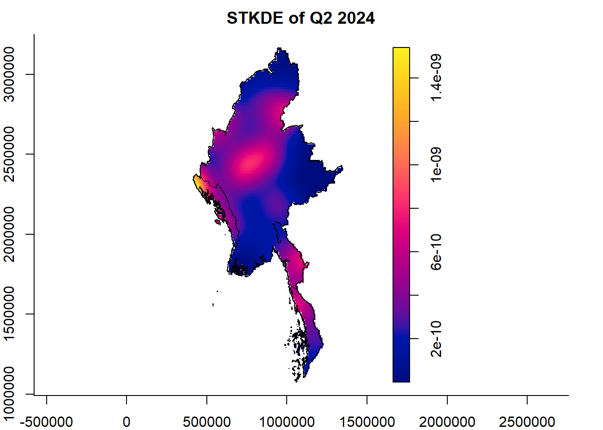

pacman::p_load(sf, raster, tidyverse, spatstat, sparr, tmap)Application of Spatial and Spatio-temporal Point Patterns Analysis to discover the geographical distribution of Armed Conflict in Myanmar
1.0 Overview
Myanmar has been going through civil wars and internal conflicts for decades now. These conflicts have mainly been due to ethnic tensions and general unhappiness in the governing party. Conflicts range from battles, riots, violence against civilians, strategic developments and more. In this exercise, I will be analysing the distribution of conflicts in Myanmar.
To do this, I will mainly be performing quarterly KDE analysis on 4 main types of conflicts: Battles, Explosions, Violence against Civillians and Strategic Developments through the years of 2021-2024. I will also be performing the second order spatial point pattern process as well as the spatio temporal point process analysis for these segments. Let’s get started.
1.0.1 Loading R packages
These are the packages that I will be using in this exercise.
sf: Used in spatial data wrangling
tidyverse: Used in data wrangling for non-spatial data
raster: For reading, writing and manipulating raster data
tmap: For functions relating to mapping point patterns
spatstat: Provides functions for spatial point process analysis
sparr: Provides functions for spatio-temporal point process analysis
1.2 Data Preparation
In this section, I will be retrieving the required data and performing the necessary data wrangling methods in order to transform the data into a form that is best suitable for our analytic needs for this exercise. The datasets used in this exercise are:
Myanmar_All_2021-24.csv: A csv file downloaded from ACLED, which contains all the details of the internal conflicts in Myanmar from 2021-2024. Note that the file name has been renamed for ease of use.MBoundary: A shapefile downloaded from Myanmar Information Management Unit, MIMU. This shapefile maps out the boundary of Myanmar. I have also renamed this file for ease of use.
1.2.1 Importing the Data
Firstly, I will be importing the base map of Myanmar in shapefile format using st_read() function of the sf package. I will also transform the crs to that of Myanmar using the st_transform() function.
boundary <- st_read(dsn="data/raw",
layer = "MBoundary") %>%
st_transform(crs=32646)Reading layer `MBoundary' from data source
`C:\santhyats\IS415-GAA\Take-Home_Exercises\Take-Home_Ex01\data\raw'
using driver `ESRI Shapefile'
Simple feature collection with 1 feature and 2 fields
Geometry type: MULTIPOLYGON
Dimension: XY
Bounding box: xmin: 92.1721 ymin: 9.696844 xmax: 101.17 ymax: 28.54554
Geodetic CRS: WGS 84We will make use of st_crs() function to make sure that the Coordinate Reference System has been correctly transformed to that of Myanmar.
st_crs(boundary)Coordinate Reference System:
User input: EPSG:32646
wkt:
PROJCRS["WGS 84 / UTM zone 46N",
BASEGEOGCRS["WGS 84",
ENSEMBLE["World Geodetic System 1984 ensemble",
MEMBER["World Geodetic System 1984 (Transit)"],
MEMBER["World Geodetic System 1984 (G730)"],
MEMBER["World Geodetic System 1984 (G873)"],
MEMBER["World Geodetic System 1984 (G1150)"],
MEMBER["World Geodetic System 1984 (G1674)"],
MEMBER["World Geodetic System 1984 (G1762)"],
MEMBER["World Geodetic System 1984 (G2139)"],
ELLIPSOID["WGS 84",6378137,298.257223563,
LENGTHUNIT["metre",1]],
ENSEMBLEACCURACY[2.0]],
PRIMEM["Greenwich",0,
ANGLEUNIT["degree",0.0174532925199433]],
ID["EPSG",4326]],
CONVERSION["UTM zone 46N",
METHOD["Transverse Mercator",
ID["EPSG",9807]],
PARAMETER["Latitude of natural origin",0,
ANGLEUNIT["degree",0.0174532925199433],
ID["EPSG",8801]],
PARAMETER["Longitude of natural origin",93,
ANGLEUNIT["degree",0.0174532925199433],
ID["EPSG",8802]],
PARAMETER["Scale factor at natural origin",0.9996,
SCALEUNIT["unity",1],
ID["EPSG",8805]],
PARAMETER["False easting",500000,
LENGTHUNIT["metre",1],
ID["EPSG",8806]],
PARAMETER["False northing",0,
LENGTHUNIT["metre",1],
ID["EPSG",8807]]],
CS[Cartesian,2],
AXIS["(E)",east,
ORDER[1],
LENGTHUNIT["metre",1]],
AXIS["(N)",north,
ORDER[2],
LENGTHUNIT["metre",1]],
USAGE[
SCOPE["Navigation and medium accuracy spatial referencing."],
AREA["Between 90°E and 96°E, northern hemisphere between equator and 84°N, onshore and offshore. Bangladesh. Bhutan. China. Indonesia. Mongolia. Myanmar (Burma). Russian Federation."],
BBOX[0,90,84,96]],
ID["EPSG",32646]]Next, I will also be Importing the regional boundaries of Myanmar and transforming the crs to that of Myanmar’s again.
regions_sf <- st_read(dsn="data/raw",
layer="regions") %>%
st_transform(crs = 32646)Reading layer `regions' from data source
`C:\santhyats\IS415-GAA\Take-Home_Exercises\Take-Home_Ex01\data\raw'
using driver `ESRI Shapefile'
Simple feature collection with 18 features and 6 fields
Geometry type: MULTIPOLYGON
Dimension: XY
Bounding box: xmin: 92.1721 ymin: 9.696844 xmax: 101.17 ymax: 28.54554
Geodetic CRS: WGS 84Lastly, I will be importing and reading the csv file containing the data about the conflicts into a dataframe called all_sf. This is done using the read_csv() function of the readr package. I will once again ensure that the crs of the data is transformed to that of Myanmar’s.
all_sf <- read_csv('data/raw/Myanmar_All_2021-24.csv') %>%
st_as_sf(coords = c('longitude', 'latitude'),
crs=4326) %>%
st_transform(crs=32646) %>%
select(1:4, 6,19, 29, 30) Rows: 51553 Columns: 31
── Column specification ────────────────────────────────────────────────────────
Delimiter: ","
chr (20): event_id_cnty, event_date, disorder_type, event_type, sub_event_ty...
dbl (11): year, time_precision, inter1, inter2, interaction, iso, latitude, ...
ℹ Use `spec()` to retrieve the full column specification for this data.
ℹ Specify the column types or set `show_col_types = FALSE` to quiet this message.st_crs(all_sf)Coordinate Reference System:
User input: EPSG:32646
wkt:
PROJCRS["WGS 84 / UTM zone 46N",
BASEGEOGCRS["WGS 84",
ENSEMBLE["World Geodetic System 1984 ensemble",
MEMBER["World Geodetic System 1984 (Transit)"],
MEMBER["World Geodetic System 1984 (G730)"],
MEMBER["World Geodetic System 1984 (G873)"],
MEMBER["World Geodetic System 1984 (G1150)"],
MEMBER["World Geodetic System 1984 (G1674)"],
MEMBER["World Geodetic System 1984 (G1762)"],
MEMBER["World Geodetic System 1984 (G2139)"],
ELLIPSOID["WGS 84",6378137,298.257223563,
LENGTHUNIT["metre",1]],
ENSEMBLEACCURACY[2.0]],
PRIMEM["Greenwich",0,
ANGLEUNIT["degree",0.0174532925199433]],
ID["EPSG",4326]],
CONVERSION["UTM zone 46N",
METHOD["Transverse Mercator",
ID["EPSG",9807]],
PARAMETER["Latitude of natural origin",0,
ANGLEUNIT["degree",0.0174532925199433],
ID["EPSG",8801]],
PARAMETER["Longitude of natural origin",93,
ANGLEUNIT["degree",0.0174532925199433],
ID["EPSG",8802]],
PARAMETER["Scale factor at natural origin",0.9996,
SCALEUNIT["unity",1],
ID["EPSG",8805]],
PARAMETER["False easting",500000,
LENGTHUNIT["metre",1],
ID["EPSG",8806]],
PARAMETER["False northing",0,
LENGTHUNIT["metre",1],
ID["EPSG",8807]]],
CS[Cartesian,2],
AXIS["(E)",east,
ORDER[1],
LENGTHUNIT["metre",1]],
AXIS["(N)",north,
ORDER[2],
LENGTHUNIT["metre",1]],
USAGE[
SCOPE["Navigation and medium accuracy spatial referencing."],
AREA["Between 90°E and 96°E, northern hemisphere between equator and 84°N, onshore and offshore. Bangladesh. Bhutan. China. Indonesia. Mongolia. Myanmar (Burma). Russian Federation."],
BBOX[0,90,84,96]],
ID["EPSG",32646]]1.2.2 Preparing the Data
Before we can start deriving our KDE layers, we will make sure our data is in a suitable form and is processed in a way that we need it in. I will start off by converting the date column in the aspatial data to the date format so that can be handled during computations. This is done through the as.Date() functon. I will also add in new columns called “quarters” and “num_quarters” to keep track of our quarters and its numbers. The numeric quarters column will come in handy when we are computing our Spatio Temporal KDE layers later.
all_sf$event_date <- as.Date(all_sf$event_date, format = "%d %B %Y")
all_sf$quarters <- paste(quarters(all_sf$event_date), year(all_sf$event_date), sep="_")
all_sf$num_quarters<-quarter(all_sf$event_date)Before we can filter out the data that we need, I will be visualising the data according to the event types to observe for any patterns or similarity. To do this, I will first use tm_shape() and tm_polygons() of the tmap package to plot the base map of Myanmar, indicating all the regions. Next, I will use tm_shape() and tm_dots() together to plot out all the spatial points. Lastly, I will use tm_facets() to separate the plots according to the type of conlfict.
tm_shape(boundary) + tm_polygons() + tm_shape(regions_sf) + tm_polygons() + tm_shape(all_sf) + tm_dots() + tm_facets(by='event_type', free.coords = FALSE, drop.units= TRUE)
From the patterns observed above, I see that Battles, Strategic Developments, Explosions and Violence against civilians all have similar distribution of conflicts across the space. I also noted that Riots and Protests have very sparsespatial points even over the aggregated 4 year dataset. This indicates the possibility that there will be few to no spatial points available to analyse for certain quarters.
As such, I will be focusing my analysis on these four main categories of conflicts: Battles, Strategic Developments, Violence against Civilians and Explosions.
I will filter out the data according to these event types using the filter() function and save them in separate sf objects.
battles_sf <- all_sf %>% filter(event_type == 'Battles')
battles_sfSimple feature collection with 12049 features and 9 fields
Geometry type: POINT
Dimension: XY
Bounding box: xmin: 416859.3 ymin: 1108594 xmax: 1223493 ymax: 3033183
Projected CRS: WGS 84 / UTM zone 46N
# A tibble: 12,049 × 10
event_id_cnty event_date year time_precision event_type admin1 timestamp
* <chr> <date> <dbl> <dbl> <chr> <chr> <dbl>
1 MMR64313 2024-06-30 2024 1 Battles Mandalay 1.72e9
2 MMR64320 2024-06-30 2024 1 Battles Mandalay 1.72e9
3 MMR64321 2024-06-30 2024 1 Battles Mandalay 1.72e9
4 MMR64323 2024-06-30 2024 1 Battles Sagaing 1.72e9
5 MMR64325 2024-06-30 2024 1 Battles Shan-North 1.72e9
6 MMR64326 2024-06-30 2024 1 Battles Shan-North 1.72e9
7 MMR64328 2024-06-30 2024 1 Battles Shan-North 1.72e9
8 MMR64330 2024-06-30 2024 1 Battles Shan-North 1.72e9
9 MMR64331 2024-06-30 2024 1 Battles Shan-North 1.72e9
10 MMR64332 2024-06-30 2024 1 Battles Shan-South 1.72e9
# ℹ 12,039 more rows
# ℹ 3 more variables: geometry <POINT [m]>, quarters <chr>, num_quarters <int>exp_sf <- all_sf %>% filter(event_type == "Explosions/Remote violence")
civViolence_sf <- all_sf %>% filter(event_type == "Violence against civilians")
strat_dev_sf <- all_sf %>% filter(event_type == 'Strategic developments')I will also be creating a separate sf containing the only the timeframe and the geometry of the spatial points, to be used in our Spatio Temporal KDE layers later. This is done by using the select() functions to select only the “quarters”, “num_quarters” an d”geometry” columns from the dataframes of the respective conflict types.
quart_geo_bat<- battles_sf %>%
select(3,8,10)
quart_geo_civ <- civViolence_sf %>%
select(3,8,10)
quart_geo_exp<- exp_sf %>%
select(3,8,10)
quart_geo_strat<- strat_dev_sf %>%
select(3,8,10)Finally, I will further split the conflict type datasets into quarterly periods. For ease of use, I will write these sf objects into rds files and save them in a compiled folder.
q1_21_battles_sf <- battles_sf %>%
filter(year == '2021' ) %>%
filter(quarter(event_date) == 1) %>%
write_rds("data/rds/Battles/2021/q1.rds")
q2_21_battles_sf <-battles_sf %>%
filter(year == '2021') %>%
filter(quarter(event_date) == 2)%>%
write_rds("data/rds/Battles/2021/q2.rds")
q3_21_battles_sf <-battles_sf %>%
filter(year == '2021') %>%
filter(quarter(event_date) == 3)%>%
write_rds("data/rds/Battles/2021/q3.rds")
q4_21_battles_sf <-battles_sf %>%
filter(year == '2021') %>%
filter(quarter(event_date) == 4)%>%
write_rds("data/rds/Battles/2021/q4.rds")
#2022
q1_22_battles_sf <- battles_sf %>%
filter(year == '2022' ) %>%
filter(quarter(event_date) == 1) %>%
write_rds("data/rds/Battles/2022/q1.rds")
q2_22_battles_sf <-battles_sf %>%
filter(year == '2022') %>%
filter(quarter(event_date) == 2)%>%
write_rds("data/rds/Battles/2022/q2.rds")
q3_22_battles_sf <-battles_sf %>%
filter(year == '2022') %>%
filter(quarter(event_date) == 3)%>%
write_rds("data/rds/Battles/2022/q3.rds")
q4_22_battles_sf <-battles_sf %>%
filter(year == '2022') %>%
filter(quarter(event_date) == 4)%>%
write_rds("data/rds/Battles/2022/q4.rds")
#2023
q1_23_battles_sf <- battles_sf %>%
filter(year == '2023' ) %>%
filter(quarter(event_date) == 1) %>%
write_rds("data/rds/Battles/2023/q1.rds")
q2_23_battles_sf <-battles_sf %>%
filter(year == '2023') %>%
filter(quarter(event_date) == 2)%>%
write_rds("data/rds/Battles/2023/q2.rds")
q3_23_battles_sf <-battles_sf %>%
filter(year == '2023') %>%
filter(quarter(event_date) == 3)%>%
write_rds("data/rds/Battles/2023/q3.rds")
q4_23_battles_sf <-battles_sf %>%
filter(year == '2023') %>%
filter(quarter(event_date) == 4)%>%
write_rds("data/rds/Battles/2023/q4.rds")
#2024
q1_24_battles_sf <- battles_sf %>%
filter(year == '2024' ) %>%
filter(quarter(event_date) == 1) %>%
write_rds("data/rds/Battles/2024/q1.rds")
q2_24_battles_sf <-battles_sf %>%
filter(year == '2024') %>%
filter(quarter(event_date) == 2)%>%
write_rds("data/rds/Battles/2024/q2.rds")q1_21_exp_sf <- exp_sf %>%
filter(year == '2021' ) %>%
filter(quarter(event_date) == 1) %>%
write_rds("data/rds/Explosions/2021/q1.rds")
q2_21_exp_sf <-exp_sf %>%
filter(year == '2021') %>%
filter(quarter(event_date) == 2)%>%
write_rds("data/rds/Explosions/2021/q2.rds")
q3_21_exp_sf <-exp_sf %>%
filter(year == '2021') %>%
filter(quarter(event_date) == 3)%>%
write_rds("data/rds/Explosions/2021/q3.rds")
q4_21_exp_sf <-exp_sf %>%
filter(year == '2021') %>%
filter(quarter(event_date) == 4)%>%
write_rds("data/rds/Explosions/2021/q4.rds")
#2022
q1_22_exp_sf <- exp_sf %>%
filter(year == '2022' ) %>%
filter(quarter(event_date) == 1) %>%
write_rds("data/rds/Explosions/2022/q1.rds")
q2_22_exp_sf <-exp_sf %>%
filter(year == '2022') %>%
filter(quarter(event_date) == 2)%>%
write_rds("data/rds/Explosions/2022/q2.rds")
q3_22_exp_sf <-exp_sf %>%
filter(year == '2022') %>%
filter(quarter(event_date) == 3)%>%
write_rds("data/rds/Explosions/2022/q3.rds")
q4_22_exp_sf <-exp_sf %>%
filter(year == '2022') %>%
filter(quarter(event_date) == 4)%>%
write_rds("data/rds/Explosions/2022/q4.rds")
#2023
q1_23_exp_sf <-exp_sf %>%
filter(year == '2023' ) %>%
filter(quarter(event_date) == 1) %>%
write_rds("data/rds/Explosions/2023/q1.rds")
q2_23_exp_sf <-exp_sf %>%
filter(year == '2023') %>%
filter(quarter(event_date) == 2)%>%
write_rds("data/rds/Explosions/2023/q2.rds")
q3_23_exp_sf <-exp_sf %>%
filter(year == '2023') %>%
filter(quarter(event_date) == 3)%>%
write_rds("data/rds/Explosions/2023/q3.rds")
q4_23_exp_sf <-battles_sf %>%
filter(year == '2023') %>%
filter(quarter(event_date) == 4)%>%
write_rds("data/rds/Explosions/2023/q4.rds")
#2024
q1_24_exp_sf <- exp_sf %>%
filter(year == '2024' ) %>%
filter(quarter(event_date) == 1) %>%
write_rds("data/rds/Explosions/2024/q1.rds")
q2_24_exp_sf <-exp_sf %>%
filter(year == '2024') %>%
filter(quarter(event_date) == 2)%>%
write_rds("data/rds/Explosions/2024/q2.rds")q1_21_civViolence_sf <- civViolence_sf %>%
filter(year == '2021' ) %>%
filter(quarter(event_date) == 1) %>%
write_rds("data/rds/Violence/2021/q1.rds")
q2_21_civViolence_sf <-civViolence_sf %>%
filter(year == '2021') %>%
filter(quarter(event_date) == 2)%>%
write_rds("data/rds/Violence/2021/q2.rds")
q3_21_civViolence_sf <-civViolence_sf %>%
filter(year == '2021') %>%
filter(quarter(event_date) == 3)%>%
write_rds("data/rds/Violence/2021/q3.rds")
q4_21_civViolence_sf <-civViolence_sf %>%
filter(year == '2021') %>%
filter(quarter(event_date) == 4)%>%
write_rds("data/rds/Violence/2021/q4.rds")
#2022
q1_22_civViolence_sf <- civViolence_sf %>%
filter(year == '2022' ) %>%
filter(quarter(event_date) == 1) %>%
write_rds("data/rds/Violence/2022/q1.rds")
q2_22_civViolence_sf <-civViolence_sf %>%
filter(year == '2022') %>%
filter(quarter(event_date) == 2)%>%
write_rds("data/rds/Violence/2022/q2.rds")
q3_22_civViolence_sf <-civViolence_sf %>%
filter(year == '2022') %>%
filter(quarter(event_date) == 3)%>%
write_rds("data/rds/Violence/2022/q3.rds")
q4_22_civViolence_sf <-civViolence_sf %>%
filter(year == '2022') %>%
filter(quarter(event_date) == 4)%>%
write_rds("data/rds/Violence/2022/q4.rds")
#2023
q1_23_civViolence_sf <-civViolence_sf %>%
filter(year == '2023' ) %>%
filter(quarter(event_date) == 1) %>%
write_rds("data/rds/Violence/2023/q1.rds")
q2_23_civViolence_sf <-civViolence_sf %>%
filter(year == '2023') %>%
filter(quarter(event_date) == 2)%>%
write_rds("data/rds/Violence/2023/q2.rds")
q3_23_civViolence_sf <-civViolence_sf %>%
filter(year == '2023') %>%
filter(quarter(event_date) == 3)%>%
write_rds("data/rds/Violence/2023/q3.rds")
q4_23_civViolence_sf <-civViolence_sf %>%
filter(year == '2023') %>%
filter(quarter(event_date) == 4)%>%
write_rds("data/rds/Violence/2023/q4.rds")
#2024
q1_24_civViolence_sf <- civViolence_sf %>%
filter(year == '2024' ) %>%
filter(quarter(event_date) == 1) %>%
write_rds("data/rds/Violence/2024/q1.rds")
q2_24_civViolence_sf <-civViolence_sf %>%
filter(year == '2024') %>%
filter(quarter(event_date) == 2)%>%
write_rds("data/rds/Violence/2024/q2.rds")q1_21_strat_dev_sf <- strat_dev_sf %>%
filter(year == '2021' ) %>%
filter(quarter(event_date) == 1) %>%
write_rds("data/rds/Strat_Dev/2021/q1.rds")
q2_21_strat_dev_sf <-strat_dev_sf %>%
filter(year == '2021') %>%
filter(quarter(event_date) == 2)%>%
write_rds("data/rds/Strat_Dev/2021/q2.rds")
q3_21_strat_dev_sf <-strat_dev_sf %>%
filter(year == '2021') %>%
filter(quarter(event_date) == 3)%>%
write_rds("data/rds/Strat_Dev/2021/q3.rds")
q4_21_strat_dev_sf <-strat_dev_sf %>%
filter(year == '2021') %>%
filter(quarter(event_date) == 4)%>%
write_rds("data/rds/Strat_Dev/2021/q4.rds")
#2022
q1_22_strat_dev_sf <- strat_dev_sf %>%
filter(year == '2022' ) %>%
filter(quarter(event_date) == 1) %>%
write_rds("data/rds/Strat_Dev/2022/q1.rds")
q2_22_strat_dev_sf <-strat_dev_sf %>%
filter(year == '2022') %>%
filter(quarter(event_date) == 2)%>%
write_rds("data/rds/Strat_Dev/2022/q2.rds")
q3_22_strat_dev_sf <-strat_dev_sf %>%
filter(year == '2022') %>%
filter(quarter(event_date) == 3)%>%
write_rds("data/rds/Strat_Dev/2022/q3.rds")
q4_22_strat_dev_sf <-strat_dev_sf %>%
filter(year == '2022') %>%
filter(quarter(event_date) == 4)%>%
write_rds("data/rds/Strat_Dev/2022/q4.rds")
#2023
q1_23_strat_dev_sf <-civViolence_sf %>%
filter(year == '2023' ) %>%
filter(quarter(event_date) == 1) %>%
write_rds("data/rds/Strat_Dev/2023/q1.rds")
q2_23_strat_dev_sf <-strat_dev_sf %>%
filter(year == '2023') %>%
filter(quarter(event_date) == 2)%>%
write_rds("data/rds/Strat_Dev/2023/q2.rds")
q3_23_strat_dev_sf <-strat_dev_sf %>%
filter(year == '2023') %>%
filter(quarter(event_date) == 3)%>%
write_rds("data/rds/Strat_Dev/2023/q3.rds")
q4_23_strat_dev_sf <-strat_dev_sf %>%
filter(year == '2023') %>%
filter(quarter(event_date) == 4)%>%
write_rds("data/rds/Strat_Dev/2023/q4.rds")
#2024
q1_24_strat_dev_sf <- strat_dev_sf %>%
filter(year == '2024' ) %>%
filter(quarter(event_date) == 1) %>%
write_rds("data/rds/Strat_Dev/2024/q1.rds")
q2_24_strat_dev_sf <-strat_dev_sf %>%
filter(year == '2024') %>%
filter(quarter(event_date) == 2)%>%
write_rds("data/rds/Strat_Dev/2024/q2.rds")2.2 Data Wrangling
2.2.1 Converting the sf objects to ppp objects
To derive our KDE layers, we would firstly need the sf objects to be converted to ppp objects. This is because the function that we will be using, density() of the spatstat package, only takes in objects in the ppp form. We will do this using the as.ppp() function.
battlesQ121_ppp <- as.ppp(st_coordinates(q1_21_battles_sf), st_bbox(q1_21_battles_sf))Warning: data contain duplicated pointsbattlesQ221_ppp <- as.ppp(st_coordinates(q2_21_battles_sf), st_bbox(q2_21_battles_sf))Warning: data contain duplicated pointsbattlesQ321_ppp<- as.ppp(st_coordinates(q3_21_battles_sf), st_bbox(q3_21_battles_sf))Warning: data contain duplicated pointsbattlesQ421_ppp<-as.ppp(st_coordinates(q4_21_battles_sf), st_bbox(q4_21_battles_sf))Warning: data contain duplicated points#2022
battlesQ122_ppp <- as.ppp(st_coordinates(q1_22_battles_sf), st_bbox(q1_22_battles_sf))Warning: data contain duplicated pointsbattlesQ222_ppp <- as.ppp(st_coordinates(q2_22_battles_sf), st_bbox(q2_22_battles_sf))Warning: data contain duplicated pointsbattlesQ322_ppp<- as.ppp(st_coordinates(q3_22_battles_sf), st_bbox(q3_22_battles_sf))Warning: data contain duplicated pointsbattlesQ422_ppp<-as.ppp(st_coordinates(q4_22_battles_sf), st_bbox(q4_22_battles_sf))Warning: data contain duplicated points#2023
battlesQ123_ppp <- as.ppp(st_coordinates(q1_23_battles_sf), st_bbox(q1_23_battles_sf))Warning: data contain duplicated pointsbattlesQ223_ppp <- as.ppp(st_coordinates(q2_23_battles_sf), st_bbox(q2_23_battles_sf))Warning: data contain duplicated pointsbattlesQ323_ppp<- as.ppp(st_coordinates(q3_23_battles_sf), st_bbox(q3_23_battles_sf))Warning: data contain duplicated pointsbattlesQ423_ppp<-as.ppp(st_coordinates(q4_23_battles_sf), st_bbox(q4_23_battles_sf))Warning: data contain duplicated points#2024
battlesQ124_ppp <- as.ppp(st_coordinates(q1_24_battles_sf), st_bbox(q1_24_battles_sf))Warning: data contain duplicated pointsbattlesQ224_ppp <- as.ppp(st_coordinates(q2_24_battles_sf), st_bbox(q2_24_battles_sf))Warning: data contain duplicated pointsexpQ121_ppp <- as.ppp(st_coordinates(q1_21_exp_sf), st_bbox(q1_21_exp_sf))Warning: data contain duplicated pointsexpQ221_ppp <- as.ppp(st_coordinates(q2_21_exp_sf), st_bbox(q2_21_exp_sf))Warning: data contain duplicated pointsexpQ321_ppp<- as.ppp(st_coordinates(q3_21_exp_sf), st_bbox(q3_21_exp_sf))Warning: data contain duplicated pointsexpQ421_ppp<-as.ppp(st_coordinates(q4_21_exp_sf), st_bbox(q4_21_exp_sf))Warning: data contain duplicated points#2022
expQ122_ppp <- as.ppp(st_coordinates(q1_22_exp_sf), st_bbox(q1_22_exp_sf))Warning: data contain duplicated pointsexpQ222_ppp <- as.ppp(st_coordinates(q2_22_exp_sf), st_bbox(q2_22_exp_sf))Warning: data contain duplicated pointsexpQ322_ppp<- as.ppp(st_coordinates(q3_22_exp_sf), st_bbox(q3_22_exp_sf))Warning: data contain duplicated pointsexpQ422_ppp<-as.ppp(st_coordinates(q4_22_exp_sf), st_bbox(q4_22_exp_sf))Warning: data contain duplicated points#2023
expQ123_ppp <- as.ppp(st_coordinates(q1_23_exp_sf), st_bbox(q1_23_exp_sf))Warning: data contain duplicated pointsexpQ223_ppp <- as.ppp(st_coordinates(q2_23_exp_sf), st_bbox(q2_23_exp_sf))Warning: data contain duplicated pointsexpQ323_ppp<- as.ppp(st_coordinates(q3_23_exp_sf), st_bbox(q3_23_exp_sf))Warning: data contain duplicated pointsexpQ423_ppp<-as.ppp(st_coordinates(q4_23_exp_sf), st_bbox(q4_23_exp_sf))Warning: data contain duplicated points#2024
expQ124_ppp <- as.ppp(st_coordinates(q1_24_exp_sf), st_bbox(q1_24_exp_sf))Warning: data contain duplicated pointsexpQ224_ppp <- as.ppp(st_coordinates(q2_24_exp_sf), st_bbox(q2_24_exp_sf))Warning: data contain duplicated pointsstrat_devQ121_ppp <- as.ppp(st_coordinates(q1_21_strat_dev_sf), st_bbox(q1_21_strat_dev_sf))Warning: data contain duplicated pointsstrat_devQ221_ppp <- as.ppp(st_coordinates(q2_21_strat_dev_sf), st_bbox(q2_21_strat_dev_sf))Warning: data contain duplicated pointsstrat_devQ321_ppp<- as.ppp(st_coordinates(q3_21_strat_dev_sf), st_bbox(q3_21_strat_dev_sf))Warning: data contain duplicated pointsstrat_devQ421_ppp<-as.ppp(st_coordinates(q4_21_strat_dev_sf), st_bbox(q4_21_strat_dev_sf))Warning: data contain duplicated points#2022
strat_devQ122_ppp <- as.ppp(st_coordinates(q1_22_strat_dev_sf), st_bbox(q1_22_strat_dev_sf))Warning: data contain duplicated pointsstrat_devQ222_ppp <- as.ppp(st_coordinates(q2_22_strat_dev_sf), st_bbox(q2_22_strat_dev_sf))Warning: data contain duplicated pointsstrat_devQ322_ppp<- as.ppp(st_coordinates(q3_22_strat_dev_sf), st_bbox(q3_22_strat_dev_sf))Warning: data contain duplicated pointsstrat_devQ422_ppp<-as.ppp(st_coordinates(q4_22_strat_dev_sf), st_bbox(q4_22_strat_dev_sf))Warning: data contain duplicated points#2023
strat_devQ123_ppp <- as.ppp(st_coordinates(q1_23_strat_dev_sf), st_bbox(q1_23_strat_dev_sf))Warning: data contain duplicated pointsstrat_devQ223_ppp <- as.ppp(st_coordinates(q2_23_strat_dev_sf), st_bbox(q2_23_strat_dev_sf))Warning: data contain duplicated pointsstrat_devQ323_ppp<- as.ppp(st_coordinates(q3_23_strat_dev_sf), st_bbox(q3_23_strat_dev_sf))Warning: data contain duplicated pointsstrat_devQ423_ppp<-as.ppp(st_coordinates(q4_23_strat_dev_sf), st_bbox(q4_23_strat_dev_sf))Warning: data contain duplicated points#2024
strat_devQ124_ppp <- as.ppp(st_coordinates(q1_24_strat_dev_sf), st_bbox(q1_24_strat_dev_sf))Warning: data contain duplicated pointsstrat_devQ224_ppp <- as.ppp(st_coordinates(q2_24_strat_dev_sf), st_bbox(q2_24_strat_dev_sf))Warning: data contain duplicated pointscivViolenceQ121_ppp <- as.ppp(st_coordinates(q1_21_civViolence_sf), st_bbox(q1_21_civViolence_sf))Warning: data contain duplicated pointscivViolenceQ221_ppp <- as.ppp(st_coordinates(q2_21_civViolence_sf), st_bbox(q2_21_civViolence_sf))Warning: data contain duplicated pointscivViolenceQ321_ppp<- as.ppp(st_coordinates(q3_21_civViolence_sf), st_bbox(q3_21_civViolence_sf))Warning: data contain duplicated pointscivViolenceQ421_ppp<-as.ppp(st_coordinates(q4_21_civViolence_sf), st_bbox(q4_21_civViolence_sf))Warning: data contain duplicated points#2022
civViolenceQ122_ppp <- as.ppp(st_coordinates(q1_22_civViolence_sf), st_bbox(q1_22_civViolence_sf))Warning: data contain duplicated pointscivViolenceQ222_ppp <- as.ppp(st_coordinates(q2_22_civViolence_sf), st_bbox(q2_22_civViolence_sf))Warning: data contain duplicated pointscivViolenceQ322_ppp<- as.ppp(st_coordinates(q3_22_civViolence_sf), st_bbox(q3_22_civViolence_sf))Warning: data contain duplicated pointscivViolenceQ422_ppp<-as.ppp(st_coordinates(q4_22_civViolence_sf), st_bbox(q4_22_civViolence_sf))Warning: data contain duplicated points#2023
civViolenceQ123_ppp <- as.ppp(st_coordinates(q1_23_civViolence_sf), st_bbox(q1_23_civViolence_sf))Warning: data contain duplicated pointscivViolenceQ223_ppp <- as.ppp(st_coordinates(q2_23_civViolence_sf), st_bbox(q2_23_civViolence_sf))Warning: data contain duplicated pointscivViolenceQ323_ppp<- as.ppp(st_coordinates(q3_23_civViolence_sf), st_bbox(q3_23_civViolence_sf))Warning: data contain duplicated pointscivViolenceQ423_ppp<-as.ppp(st_coordinates(q4_23_civViolence_sf), st_bbox(q4_23_civViolence_sf))Warning: data contain duplicated points#2024
civViolenceQ124_ppp <- as.ppp(st_coordinates(q1_24_civViolence_sf), st_bbox(q1_24_civViolence_sf))Warning: data contain duplicated pointscivViolenceQ224_ppp <- as.ppp(st_coordinates(q2_24_civViolence_sf), st_bbox(q2_24_civViolence_sf))Warning: data contain duplicated points2.2.2 Converting the boundary to an owin object
I will convert the regions_sf object to an owin object using the the as.owin() function.
boundary_owin <- as.owin(regions_sf)Once we have our ppp objects and owin object, we can start combining them to one object which can then be passed through the density() function.
battlesQ121_ppp_com<- battlesQ121_ppp[boundary_owin]
battlesQ121_ppp_com<- rescale(battlesQ121_ppp_com, 1000, "km")
battlesQ221_ppp_com<- battlesQ221_ppp[boundary_owin]
battlesQ221_ppp_com<- rescale(battlesQ221_ppp_com, 1000, "km")
battlesQ321_ppp_com<- battlesQ321_ppp[boundary_owin]
battlesQ321_ppp_com<- rescale(battlesQ321_ppp_com, 1000, "km")
battlesQ421_ppp_com<- battlesQ421_ppp[boundary_owin]
battlesQ421_ppp_com<- rescale(battlesQ421_ppp_com, 1000, "km")
#2022
battlesQ122_ppp_com<- battlesQ122_ppp[boundary_owin]
battlesQ122_ppp_com<- rescale(battlesQ122_ppp_com, 1000, "km")
battlesQ222_ppp_com<- battlesQ222_ppp[boundary_owin]
battlesQ222_ppp_com<- rescale(battlesQ222_ppp_com, 1000, "km")
battlesQ322_ppp_com<- battlesQ322_ppp[boundary_owin]
battlesQ322_ppp_com<- rescale(battlesQ322_ppp_com, 1000, "km")
battlesQ422_ppp_com<- battlesQ422_ppp[boundary_owin]
battlesQ422_ppp_com<- rescale(battlesQ422_ppp_com, 1000, "km")
#2023
battlesQ123_ppp_com<- battlesQ123_ppp[boundary_owin]
battlesQ123_ppp_com<- rescale(battlesQ123_ppp_com, 1000, "km")
battlesQ223_ppp_com<- battlesQ223_ppp[boundary_owin]
battlesQ223_ppp_com<- rescale(battlesQ223_ppp_com, 1000, "km")
battlesQ323_ppp_com<- battlesQ323_ppp[boundary_owin]
battlesQ323_ppp_com<- rescale(battlesQ323_ppp_com, 1000, "km")
battlesQ423_ppp_com<- battlesQ423_ppp[boundary_owin]
battlesQ423_ppp_com<- rescale(battlesQ423_ppp_com, 1000, "km")
#2024
battlesQ124_ppp_com<- battlesQ124_ppp[boundary_owin]
battlesQ124_ppp<- rescale(battlesQ124_ppp_com, 1000, "km")
battlesQ224_ppp_com<- battlesQ224_ppp[boundary_owin]
battlesQ224_ppp_com<- rescale(battlesQ224_ppp_com, 1000, "km")expQ121_ppp_com<- expQ121_ppp[boundary_owin]
expQ121_ppp_com<- rescale(expQ121_ppp_com, 1000, "km")
expQ221_ppp_com<- expQ221_ppp[boundary_owin]
expQ221_ppp_com<- rescale(expQ221_ppp_com, 1000, "km")
expQ321_ppp_com<- expQ321_ppp[boundary_owin]
expQ321_ppp_com<- rescale(expQ321_ppp_com, 1000, "km")
expQ421_ppp_com<- expQ421_ppp[boundary_owin]
expQ421_ppp_com<- rescale(expQ421_ppp_com, 1000, "km")
#2022
expQ122_ppp_com<- expQ122_ppp[boundary_owin]
expQ122_ppp_com<- rescale(expQ122_ppp_com, 1000, "km")
expQ222_ppp_com<- expQ222_ppp[boundary_owin]
expQ222_ppp_com<- rescale(expQ222_ppp_com, 1000, "km")
expQ322_ppp_com<- expQ322_ppp[boundary_owin]
expQ322_ppp_com<- rescale(expQ322_ppp_com, 1000, "km")
expQ422_ppp_com<- expQ422_ppp[boundary_owin]
expQ422_ppp_com<- rescale(expQ422_ppp_com, 1000, "km")
#2023
expQ123_ppp_com<- expQ123_ppp[boundary_owin]
expQ123_ppp<- rescale(expQ123_ppp_com, 1000, "km")
expQ223_ppp_com<- expQ223_ppp[boundary_owin]
expQ223_ppp_com<- rescale(expQ223_ppp_com, 1000, "km")
expQ323_ppp_com<- expQ323_ppp[boundary_owin]
expQ323_ppp_com<- rescale(expQ323_ppp_com, 1000, "km")
expQ423_ppp_com<- expQ423_ppp[boundary_owin]
expQ423_ppp_com<- rescale(expQ423_ppp_com, 1000, "km")
#2024
expQ124_ppp_com<- expQ124_ppp[boundary_owin]
expQ124_ppp_com<- rescale(expQ124_ppp_com, 1000, "km")
expQ224_ppp_com<-expQ224_ppp[boundary_owin]
expQ224_ppp_com<- rescale(expQ224_ppp_com, 1000, "km")strat_devQ121_ppp_com<- strat_devQ121_ppp[boundary_owin]
strat_devQ121_ppp_com<- rescale(strat_devQ121_ppp_com, 1000, "km")
strat_devQ221_ppp_com<- strat_devQ221_ppp[boundary_owin]
strat_devQ221_ppp_com<- rescale(strat_devQ221_ppp_com, 1000, "km")
strat_devQ321_ppp_com<- strat_devQ321_ppp[boundary_owin]
strat_devQ321_ppp_com<- rescale(strat_devQ321_ppp_com, 1000, "km")
strat_devQ421_ppp_com<- strat_devQ421_ppp[boundary_owin]
strat_devQ421_ppp_com<- rescale(strat_devQ421_ppp_com, 1000, "km")
#2022
strat_devQ122_ppp_com<- strat_devQ122_ppp[boundary_owin]
strat_devQ122_ppp_com<- rescale(strat_devQ122_ppp_com, 1000, "km")
strat_devQ222_ppp_com<- strat_devQ222_ppp[boundary_owin]
strat_devQ222_ppp_com<- rescale(strat_devQ222_ppp_com, 1000, "km")
strat_devQ322_ppp_com<- strat_devQ322_ppp[boundary_owin]
strat_devQ322_ppp_com<- rescale(strat_devQ322_ppp_com, 1000, "km")
strat_devQ422_ppp_com<- strat_devQ422_ppp[boundary_owin]
strat_devQ422_ppp_com<- rescale(strat_devQ422_ppp_com, 1000, "km")
#2023
strat_devQ123_ppp_com<- strat_devQ123_ppp[boundary_owin]
strat_devQ123_ppp_com<- rescale(strat_devQ123_ppp_com, 1000, "km")
strat_devQ223_ppp_com<- strat_devQ223_ppp[boundary_owin]
strat_devQ223_ppp_com<- rescale(strat_devQ223_ppp_com, 1000, "km")
strat_devQ323_ppp_com<- strat_devQ323_ppp[boundary_owin]
strat_devQ323_ppp_com<- rescale(strat_devQ323_ppp_com, 1000, "km")
strat_devQ423_ppp_com<- strat_devQ423_ppp[boundary_owin]
strat_devQ423_ppp_com<- rescale(strat_devQ423_ppp_com, 1000, "km")
#2024
strat_devQ124_ppp_com<- strat_devQ124_ppp[boundary_owin]
strat_devQ124_ppp_com<- rescale(strat_devQ124_ppp_com, 1000, "km")
strat_devQ224_ppp_com<-strat_devQ224_ppp[boundary_owin]
strat_devQ224_ppp_com<- rescale(strat_devQ224_ppp_com, 1000, "km")civViolenceQ121_ppp_com<- civViolenceQ121_ppp[boundary_owin]
civViolenceQ121_ppp_com<- rescale(civViolenceQ121_ppp_com, 1000, "km")
civViolenceQ221_ppp_com<- civViolenceQ221_ppp[boundary_owin]
civViolenceQ221_ppp_com<- rescale(civViolenceQ221_ppp_com, 1000, "km")
civViolenceQ321_ppp_com<- civViolenceQ321_ppp[boundary_owin]
civViolenceQ321_ppp_com<- rescale(civViolenceQ321_ppp_com, 1000, "km")
civViolenceQ421_ppp_com<- civViolenceQ421_ppp[boundary_owin]
civViolenceQ421_ppp_com<- rescale(civViolenceQ421_ppp_com, 1000, "km")
#2022
civViolenceQ122_ppp_com<- civViolenceQ122_ppp[boundary_owin]
civViolenceQ122_ppp_com<- rescale(civViolenceQ122_ppp_com, 1000, "km")
civViolenceQ222_ppp_com<- civViolenceQ222_ppp[boundary_owin]
civViolenceQ222_ppp_com<- rescale(civViolenceQ222_ppp_com, 1000, "km")
civViolenceQ322_ppp_com<- civViolenceQ322_ppp[boundary_owin]
civViolenceQ322_ppp_com<- rescale(civViolenceQ322_ppp_com, 1000, "km")
civViolenceQ422_ppp_com<- civViolenceQ422_ppp[boundary_owin]
civViolenceQ422_ppp_com<- rescale(civViolenceQ422_ppp_com, 1000, "km")
#2023
civViolenceQ123_ppp_com<- civViolenceQ123_ppp[boundary_owin]
civViolenceQ123_ppp_com<- rescale(civViolenceQ123_ppp_com, 1000, "km")
civViolenceQ223_ppp_com<- civViolenceQ223_ppp[boundary_owin]
civViolenceQ223_ppp_com<- rescale(civViolenceQ223_ppp_com, 1000, "km")
civViolenceQ323_ppp_com<- civViolenceQ323_ppp[boundary_owin]
civViolenceQ323_ppp_com<- rescale(civViolenceQ323_ppp_com, 1000, "km")
civViolenceQ423_ppp_com<- civViolenceQ423_ppp[boundary_owin]
civViolenceQ423_ppp_com<- rescale(civViolenceQ423_ppp_com, 1000, "km")
#2024
civViolenceQ124_ppp_com<- civViolenceQ124_ppp[boundary_owin]
civViolenceQ124_ppp_com<- rescale(civViolenceQ124_ppp_com, 1000, "km")
civViolenceQ224_ppp_com<- civViolenceQ224_ppp[boundary_owin]
civViolenceQ224_ppp_com<- rescale(civViolenceQ224_ppp_com, 1000, "km")1.3 Computing the quarterly KDE Layers
I will now use the combined ppp object to derive the quarterly KDE layers, sorted by the different conflict types. I will use the bw.CvL method to derive the sigma value as I have found that that function results in the most perceivable KDE map for my dataset.
bat_q121_kde<- density(battlesQ121_ppp_com, sigma=bw.CvL(battlesQ121_ppp_com), edge=TRUE, kernel="gaussian")
bat_q221_kde<-density(battlesQ221_ppp_com, sigma=bw.CvL(battlesQ221_ppp_com), edge=TRUE, kernel="gaussian")
bat_q321_kde<-density(battlesQ321_ppp_com, sigma=bw.CvL(battlesQ321_ppp_com), edge=TRUE, kernel="gaussian")
bat_q421_kde<-density(battlesQ421_ppp_com, sigma=bw.CvL(battlesQ421_ppp_com), edge=TRUE, kernel="gaussian")
par(mfrow=c(2,2))
plot(bat_q121_kde, main="Battles in 1st Quarter of 2021")
plot(bat_q221_kde, main="Battles in 2nd Quarter of 2021")
plot(bat_q321_kde, main="Battles in 3rd Quarter of 2021")
plot(bat_q421_kde, main="Battles in 4th Quarter of 2021")
bat_q122_kde<- density(battlesQ122_ppp_com, sigma=bw.CvL(battlesQ122_ppp_com), edge=TRUE, kernel="gaussian")
bat_q222_kde<-density(battlesQ222_ppp_com, sigma=bw.CvL(battlesQ222_ppp_com), edge=TRUE, kernel="gaussian")
bat_q322_kde<-density(battlesQ322_ppp_com, sigma=bw.CvL(battlesQ322_ppp_com), edge=TRUE, kernel="gaussian")
bat_q422_kde<-density(battlesQ422_ppp_com, sigma=bw.CvL(battlesQ422_ppp_com), edge=TRUE, kernel="gaussian")
par(mfrow=c(2,2))
plot(bat_q122_kde, main="Battles in 1st Quarter of 2022")
plot(bat_q222_kde, main="Battles in 2nd Quarter of 2022")
plot(bat_q322_kde, main="Battles in 3rd Quarter of 2022")
plot(bat_q422_kde, main="Battles in 4th Quarter of 2022")
bat_q123_kde<- density(battlesQ123_ppp_com, sigma=bw.CvL(battlesQ123_ppp_com), edge=TRUE, kernel="gaussian")
bat_q223_kde<-density(battlesQ223_ppp_com, sigma=bw.CvL(battlesQ223_ppp_com), edge=TRUE, kernel="gaussian")
bat_q323_kde<-density(battlesQ323_ppp_com, sigma=bw.CvL(battlesQ323_ppp_com), edge=TRUE, kernel="gaussian")
bat_q423_kde<-density(battlesQ423_ppp_com, sigma=bw.CvL(battlesQ423_ppp_com), edge=TRUE, kernel="gaussian")
par(mfrow=c(2,2))
plot(bat_q123_kde, main="Battles in 1st Quarter of 2023")
plot(bat_q223_kde, main="Battles in 2nd Quarter of 2023")
plot(bat_q323_kde, main="Battles in 3rd Quarter of 2023")
plot(bat_q423_kde, main="Battles in 4th Quarter of 2023")
bat_q124_kde<- density(battlesQ124_ppp_com, sigma=bw.CvL(battlesQ124_ppp_com), edge=TRUE, kernel="gaussian")
bat_q224_kde<-density(battlesQ224_ppp_com, sigma=bw.CvL(battlesQ224_ppp_com), edge=TRUE, kernel="gaussian")
par(mfrow=c(1,2))
plot(bat_q124_kde, main="Battles in 1st Quarter of 2024")
plot(bat_q224_kde, main="Battles in 2nd Quarter of 2024")
exp_q121_kde<- density(expQ121_ppp_com, sigma=bw.CvL(expQ121_ppp_com), edge=TRUE, kernel="gaussian")
exp_q221_kde<-density(expQ221_ppp_com, sigma=bw.CvL(expQ221_ppp_com), edge=TRUE, kernel="gaussian")
exp_q321_kde<-density(expQ321_ppp_com, sigma=bw.CvL(expQ321_ppp_com), edge=TRUE, kernel="gaussian")
exp_q421_kde<-density(expQ421_ppp_com, sigma=bw.CvL(expQ421_ppp_com), edge=TRUE, kernel="gaussian")
par(mfrow=c(2,2))
plot(exp_q121_kde, main="Explosions in 1st Quarter of 2021")
plot(exp_q221_kde, main="Explosions in 2nd Quarter of 2021")
plot(exp_q321_kde, main="Explosions in 3rd Quarter of 2021")
plot(exp_q421_kde, main="Explosions in 4th Quarter of 2021")
exp_q122_kde<- density(expQ122_ppp_com, sigma=bw.CvL(expQ122_ppp_com), edge=TRUE, kernel="gaussian")
exp_q222_kde<-density(expQ222_ppp_com, sigma=bw.CvL(expQ222_ppp_com), edge=TRUE, kernel="gaussian")
exp_q322_kde<-density(expQ322_ppp_com, sigma=bw.CvL(expQ322_ppp_com), edge=TRUE, kernel="gaussian")
exp_q422_kde<-density(expQ422_ppp_com, sigma=bw.CvL(expQ422_ppp_com), edge=TRUE, kernel="gaussian")
par(mfrow=c(2,2))
plot(exp_q122_kde, main="Explosions in 1st Quarter of 2022")
plot(exp_q222_kde, main="Explosions in 2nd Quarter of 2022")
plot(exp_q322_kde, main="Explosions in 3rd Quarter of 2022")
plot(exp_q422_kde, main="Explosions in 4th Quarter of 2022")
exp_q123_kde<- density(expQ123_ppp_com, sigma=bw.CvL(expQ123_ppp_com), edge=TRUE, kernel="gaussian")
exp_q223_kde<-density(expQ223_ppp_com, sigma=bw.CvL(expQ223_ppp_com), edge=TRUE, kernel="gaussian")
exp_q323_kde<-density(expQ323_ppp_com, sigma=bw.CvL(expQ323_ppp_com), edge=TRUE, kernel="gaussian")
exp_q423_kde<-density(expQ423_ppp_com, sigma=bw.CvL(expQ423_ppp_com), edge=TRUE, kernel="gaussian")
par(mfrow=c(2,2))
plot(exp_q123_kde, main="Explosions in 1st Quarter of 2023")
plot(exp_q223_kde, main="Explosions in 2nd Quarter of 2023")
plot(exp_q323_kde, main="Explosions in 3rd Quarter of 2023")
plot(exp_q423_kde, main="Explosions in 4th Quarter of 2023")
exp_q124_kde<- density(expQ124_ppp_com, sigma=bw.CvL(expQ124_ppp_com), edge=TRUE, kernel="gaussian")
exp_q224_kde<-density(expQ224_ppp_com, sigma=bw.CvL(expQ224_ppp_com), edge=TRUE, kernel="gaussian")
par(mfrow=c(1,2))
plot(exp_q124_kde, main="Explosions in 1st Quarter of 2024")
plot(exp_q224_kde, main="Explosions in 2nd Quarter of 2024")
strat_dev_q121_kde<- density(strat_devQ121_ppp_com, sigma=bw.CvL(strat_devQ121_ppp_com), edge=TRUE, kernel="gaussian")
strat_dev_q221_kde<-density(strat_devQ221_ppp_com, sigma=bw.CvL(strat_devQ221_ppp_com), edge=TRUE, kernel="gaussian")
strat_dev_q321_kde<-density(strat_devQ321_ppp_com, sigma=bw.CvL(strat_devQ321_ppp_com), edge=TRUE, kernel="gaussian")
strat_dev_q421_kde<-density(strat_devQ421_ppp_com, sigma=bw.CvL(strat_devQ421_ppp_com), edge=TRUE, kernel="gaussian")
par(mfrow=c(2,2))
plot(strat_dev_q121_kde, main="Strategic Developments in 1st Quarter of 2021")
plot(strat_dev_q221_kde, main="Strategic Developments in 2nd Quarter of 2021")
plot(strat_dev_q321_kde, main="Strategic Developments in 3rd Quarter of 2021")
plot(strat_dev_q421_kde, main="Strategic Developments in 4th Quarter of 2021")
strat_dev_q122_kde<- density(strat_devQ122_ppp_com, sigma=bw.CvL(strat_devQ122_ppp_com), edge=TRUE, kernel="gaussian")
strat_dev_q222_kde<-density(strat_devQ222_ppp_com, sigma=bw.CvL(strat_devQ222_ppp_com), edge=TRUE, kernel="gaussian")
strat_dev_q322_kde<-density(strat_devQ322_ppp_com, sigma=bw.CvL(strat_devQ322_ppp_com), edge=TRUE, kernel="gaussian")
strat_dev_q422_kde<-density(strat_devQ422_ppp_com, sigma=bw.CvL(strat_devQ422_ppp_com), edge=TRUE, kernel="gaussian")
par(mfrow=c(2,2))
plot(strat_dev_q122_kde, main="Strategic Developments in 1st Quarter of 2022")
plot(strat_dev_q222_kde, main="Strategic Developments in 2nd Quarter of 2022")
plot(strat_dev_q322_kde, main="Strategic Developments in 3rd Quarter of 2022")
plot(strat_dev_q422_kde, main="Strategic Developments in 4th Quarter of 2022")
strat_dev_q123_kde<- density(strat_devQ123_ppp_com, sigma=bw.CvL(strat_devQ123_ppp_com), edge=TRUE, kernel="gaussian")
strat_dev_q223_kde<-density(strat_devQ223_ppp_com, sigma=bw.CvL(strat_devQ223_ppp_com), edge=TRUE, kernel="gaussian")
strat_dev_q323_kde<-density(strat_devQ323_ppp_com, sigma=bw.CvL(strat_devQ323_ppp_com), edge=TRUE, kernel="gaussian")
strat_dev_q423_kde<-density(strat_devQ423_ppp_com, sigma=bw.CvL(strat_devQ423_ppp_com), edge=TRUE, kernel="gaussian")
par(mfrow=c(2,2))
plot(strat_dev_q123_kde, main="Strategic Developments in 1st Quarter of 2023")
plot(strat_dev_q223_kde, main="Strategic Developments in 2nd Quarter of 2023")
plot(strat_dev_q323_kde, main="Strategic Developments in 3rd Quarter of 2023")
plot(strat_dev_q423_kde, main="Strategic Developments in 4th Quarter of 2023")
strat_dev_q124_kde<- density(strat_devQ124_ppp_com, sigma=bw.CvL(strat_devQ124_ppp_com), edge=TRUE, kernel="gaussian")
strat_dev_q224_kde<-density(strat_devQ224_ppp_com, sigma=bw.CvL(strat_devQ224_ppp_com), edge=TRUE, kernel="gaussian")
par(mfrow=c(1,2))
plot(strat_dev_q124_kde, main="Strategic Developments in 1st Quarter of 2024")
plot(strat_dev_q224_kde, main="Strategic Developments in 2nd Quarter of 2024")civViolence_q121_kde<- density(civViolenceQ121_ppp_com, sigma=bw.CvL(civViolenceQ121_ppp_com), edge=TRUE, kernel="gaussian")
civViolence_q221_kde<-density(civViolenceQ221_ppp_com, sigma=bw.CvL(civViolenceQ221_ppp_com), edge=TRUE, kernel="gaussian")
civViolence_q321_kde<-density(civViolenceQ321_ppp_com, sigma=bw.CvL(civViolenceQ321_ppp_com), edge=TRUE, kernel="gaussian")
civViolence_q421_kde<-density(civViolenceQ421_ppp_com, sigma=bw.CvL(civViolenceQ421_ppp_com), edge=TRUE, kernel="gaussian")
par(mfrow=c(2,2))
plot(civViolence_q121_kde, main="Violence Against Civilians in 1st Quarter of 2021")
plot(civViolence_q221_kde, main="Violence Against Civilians in 2nd Quarter of 2021")
plot(civViolence_q321_kde, main="Violence Against Civilians in 3rd Quarter of 2021")
plot(civViolence_q421_kde, main="Violence Against Civilians in 4th Quarter of 2021")
civViolence_q122_kde<- density(civViolenceQ122_ppp_com, sigma=bw.CvL(civViolenceQ122_ppp_com), edge=TRUE, kernel="gaussian")
civViolence_q222_kde<-density(civViolenceQ222_ppp_com, sigma=bw.CvL(civViolenceQ222_ppp_com), edge=TRUE, kernel="gaussian")
civViolence_q322_kde<-density(civViolenceQ322_ppp_com, sigma=bw.CvL(civViolenceQ322_ppp_com), edge=TRUE, kernel="gaussian")
civViolence_q422_kde<-density(civViolenceQ422_ppp_com, sigma=bw.CvL(civViolenceQ422_ppp_com), edge=TRUE, kernel="gaussian")
par(mfrow=c(2,2))
plot(civViolence_q122_kde, main="Violence Against Civilians in 1st Quarter of 2022")
plot(civViolence_q222_kde, main="Violence Against Civilians in 2nd Quarter of 2022")
plot(civViolence_q322_kde, main="Violence Against Civilians in 3rd Quarter of 2022")
plot(civViolence_q422_kde, main="Violence Against Civilians in 4th Quarter of 2022")
civViolence_q123_kde<- density(civViolenceQ123_ppp_com, sigma=bw.CvL(civViolenceQ123_ppp_com), edge=TRUE, kernel="gaussian")
civViolence_q223_kde<-density(civViolenceQ223_ppp_com, sigma=bw.CvL(civViolenceQ223_ppp_com), edge=TRUE, kernel="gaussian")
civViolence_q323_kde<-density(civViolenceQ323_ppp_com, sigma=bw.CvL(civViolenceQ323_ppp_com), edge=TRUE, kernel="gaussian")
civViolence_q423_kde<-density(civViolenceQ423_ppp_com, sigma=bw.CvL(civViolenceQ423_ppp_com), edge=TRUE, kernel="gaussian")
par(mfrow=c(2,2))
plot(civViolence_q123_kde, main="Violence Against Civilians in 1st Quarter of 2023")
plot(civViolence_q223_kde, main="Violence Against Civilians in 2nd Quarter of 2023")
plot(civViolence_q323_kde, main="Violence Against Civilians in 3rd Quarter of 2023")
plot(civViolence_q423_kde, main="Violence Against Civilians in 4th Quarter of 2023")
civViolence_q124_kde<- density(civViolenceQ124_ppp_com, sigma=bw.CvL(civViolenceQ124_ppp_com), edge=TRUE, kernel="gaussian")
civViolence_q224_kde<-density(civViolenceQ224_ppp_com, sigma=bw.CvL(civViolenceQ224_ppp_com), edge=TRUE, kernel="gaussian")
par(mfrow=c(1,2))
plot(civViolence_q124_kde, main="Violence Against Civilians in 1st Quarter of 2024")
plot(civViolence_q224_kde, main="Violence Against Civilians in 2nd Quarter of 2024")
…
1.4 Computing Second Order Spatial point Process analysis
In this section, I will be computing the quarterly second order spatial point process analysis for each of the conflict types. I will be using the K- function to compute the analysis.This is because as seen from our KDE layers, density of points are on different scales for the different quarters and the K-function will allow us to analyse the spatial point with different scales.
1.5 Computing Spatio-Temporal KDE Layers
battle_st_21<- quart_geo_bat %>%
filter(year=="2021") %>%
select(2,3)
battle_21_ppp<- as.ppp(battle_st_21, coordinates=battle_st_21)
battle_21_owin<- battle_21_ppp[boundary_owin]
battles_st_21_kde<- spattemp.density(battle_21_owin)Calculating trivariate smooth...Done.
Edge-correcting...Done.
Conditioning on time...Done.tims2<-unique(battle_st_21$num_quarters)
for (i in tims2){
plot(battles_st_21_kde, i,
main = paste('STKDE of Q', i, " 2021", sep=""))
}


battle_st_22<- quart_geo_bat %>%
filter(year=="2022") %>%
select(2,3)
battle_22_ppp<- as.ppp(battle_st_22, coordinates=battle_st_22)
battle_22_owin<- battle_22_ppp[boundary_owin]
battles_st_22_kde<- spattemp.density(battle_22_owin)Calculating trivariate smooth...Done.
Edge-correcting...Done.
Conditioning on time...Done.for (i in tims2){
plot(battles_st_22_kde, i,
main = paste('STKDE of Q', i, " 2022", sep=""))
}


battle_st_23<- quart_geo_bat %>%
filter(year=="2023") %>%
select(2,3)
battle_23_ppp<- as.ppp(battle_st_23, coordinates=battle_st_23)
battle_23_owin<- battle_23_ppp[boundary_owin]
battles_st_23_kde<- spattemp.density(battle_23_owin)Calculating trivariate smooth...Done.
Edge-correcting...Done.
Conditioning on time...Done.for (i in tims2){
plot(battles_st_23_kde, i,
main = paste('STKDE of Q', i, " 2023", sep=""))
}


battle_st_24<- quart_geo_bat %>%
filter(year=="2024") %>%
select(2,3)
battle_24_ppp<- as.ppp(battle_st_24, coordinates=battle_st_24)
battle_24_owin<- battle_24_ppp[boundary_owin]
battles_st_24_kde<- spattemp.density(battle_24_owin)Calculating trivariate smooth...Done.
Edge-correcting...Done.
Conditioning on time...Done.tims2<-unique(battle_st_24$num_quarters)
for (i in tims2){
plot(battles_st_24_kde, i,
main = paste('STKDE of Q', i, " 2024", sep=""))
}

Exp_st_21<- quart_geo_exp %>%
filter(year=="2021") %>%
select(2,3)
Exp_21_ppp<- as.ppp(Exp_st_21, coordinates=Exp_st_21)
Exp_21_owin<- Exp_21_ppp[boundary_owin]
Exp_st_21_kde<- spattemp.density(Exp_21_owin)Calculating trivariate smooth...Done.
Edge-correcting...Done.
Conditioning on time...Done.tims2<-unique(Exp_st_21$num_quarters)
for (i in tims2){
plot(Exp_st_21_kde, i,
main = paste('STKDE of Q', i, " 2021", sep=""))
}

Exp_st_22<- quart_geo_exp %>%
filter(year=="2022") %>%
select(2,3)
Exp_22_ppp<- as.ppp(Exp_st_22, coordinates=Exp_st_22)
Exp_22_owin<- Exp_22_ppp[boundary_owin]
Exp_st_22_kde<- spattemp.density(Exp_22_owin)Calculating trivariate smooth...Done.
Edge-correcting...Done.
Conditioning on time...Done.tims2<-unique(Exp_st_22$num_quarters)
for (i in tims2){
plot(Exp_st_22_kde, i,
main = paste('STKDE of Q', i, " 2022", sep=""))
}


Exp_st_23<- quart_geo_exp %>%
filter(year=="2023") %>%
select(2,3)
Exp_23_ppp<- as.ppp(Exp_st_23, coordinates=Exp_st_23)
Exp_23_owin<- Exp_23_ppp[boundary_owin]
Exp_st_23_kde<- spattemp.density(Exp_23_owin)Calculating trivariate smooth...Done.
Edge-correcting...Done.
Conditioning on time...Done.tims2<-unique(Exp_st_23$num_quarters)
for (i in tims2){
plot(Exp_st_23_kde, i,
main = paste('STKDE of Q', i, " 2023", sep=""))
}


Exp_st_24<- quart_geo_exp %>%
filter(year=="2024") %>%
select(2,3)
Exp_24_ppp<- as.ppp(Exp_st_24, coordinates=Exp_st_24)
Exp_24_owin<- Exp_24_ppp[boundary_owin]
Exp_st_24_kde<- spattemp.density(Exp_24_owin)Calculating trivariate smooth...Done.
Edge-correcting...Done.
Conditioning on time...Done.tims2<-unique(Exp_st_24$num_quarters)
for (i in tims2){
plot(Exp_st_24_kde, i,
main = paste('STKDE of Q', i, " 2024", sep=""))
}

strat_dev_st_21<- quart_geo_strat %>%
filter(year=="2021") %>%
select(2,3)
strat_dev_21_ppp<- as.ppp(strat_dev_st_21, coordinates=strat_dev_st_21)
strat_dev_21_owin<- strat_dev_21_ppp[boundary_owin]
strat_dev_st_21_kde<- spattemp.density(strat_dev_21_owin)Calculating trivariate smooth...Done.
Edge-correcting...Done.
Conditioning on time...Done.tims2<-unique(strat_dev_st_21$num_quarters)
for (i in tims2){
plot(strat_dev_st_21_kde, i,
main = paste('STKDE of Q', i, " 2021", sep=""))
}

strat_dev_st_22<- quart_geo_strat %>%
filter(year=="2022") %>%
select(2,3)
strat_dev_22_ppp<- as.ppp(strat_dev_st_22, coordinates=strat_dev_st_22)
strat_dev_22_owin<- strat_dev_22_ppp[boundary_owin]
strat_dev_st_22_kde<- spattemp.density(strat_dev_22_owin)Calculating trivariate smooth...Done.
Edge-correcting...Done.
Conditioning on time...Done.tims2<-unique(strat_dev_st_22$num_quarters)
for (i in tims2){
plot(strat_dev_st_22_kde, i,
main = paste('STKDE of Q', i, " 2022", sep=""))
}


strat_dev_st_23<- quart_geo_strat %>%
filter(year=="2023") %>%
select(2,3)
strat_dev_23_ppp<- as.ppp(strat_dev_st_23, coordinates=strat_dev_st_23)
strat_dev_23_owin<- strat_dev_23_ppp[boundary_owin]
strat_dev_st_23_kde<- spattemp.density(strat_dev_23_owin)Calculating trivariate smooth...Done.
Edge-correcting...Done.
Conditioning on time...Done.tims2<-unique(strat_dev_st_23$num_quarters)
for (i in tims2){
plot(strat_dev_st_23_kde, i,
main = paste('STKDE of Q', i, " 2023", sep=""))
}

strat_dev_st_24<- quart_geo_strat %>%
filter(year=="2024") %>%
select(2,3)
strat_dev_24_ppp<- as.ppp(strat_dev_st_24, coordinates=strat_dev_st_24)
strat_dev_24_owin<- strat_dev_24_ppp[boundary_owin]
strat_dev_st_24_kde<- spattemp.density(strat_dev_24_owin)Calculating trivariate smooth...Done.
Edge-correcting...Done.
Conditioning on time...Done.tims2<-unique(strat_dev_st_24$num_quarters)
for (i in tims2){
plot(strat_dev_st_24_kde, i,
main = paste('STKDE of Q', i, " 2024", sep=""))
}civ_st_21<- quart_geo_civ %>%
filter(year=="2021") %>%
select(2,3)
civ_21_ppp<- as.ppp(civ_st_21, coordinates=civ_st_21)
civ_21_owin<- civ_21_ppp[boundary_owin]
civ_st_21_kde<- spattemp.density(civ_21_owin)Calculating trivariate smooth...Done.
Edge-correcting...Done.
Conditioning on time...Done.tims2<-unique(civ_st_21$num_quarters)
for (i in tims2){
plot(civ_st_21_kde, i,
main = paste('STKDE of Q', i, " 2021", sep=""))
}

civ_st_22<- quart_geo_civ %>%
filter(year=="2022") %>%
select(2,3)
civ_22_ppp<- as.ppp(civ_st_22, coordinates=civ_st_22)
civ_22_owin<- civ_22_ppp[boundary_owin]
civ_st_22_kde<- spattemp.density(civ_22_owin)Calculating trivariate smooth...Done.
Edge-correcting...Done.
Conditioning on time...Done.tims2<-unique(civ_st_22$num_quarters)
for (i in tims2){
plot(civ_st_22_kde, i,
main = paste('STKDE of Q', i, " 2022", sep=""))
}
civ_st_23<- quart_geo_civ %>%
filter(year=="2023") %>%
select(2,3)
civ_23_ppp<- as.ppp(civ_st_23, coordinates=civ_st_23)
civ_23_owin<- civ_23_ppp[boundary_owin]
civ_st_23_kde<- spattemp.density(civ_23_owin)Calculating trivariate smooth...Done.
Edge-correcting...Done.
Conditioning on time...Done.tims2<-unique(civ_st_23$num_quarters)
for (i in tims2){
plot(civ_st_23_kde, i,
main = paste('STKDE of Q', i, " 2023", sep=""))
}

civ_st_24<- quart_geo_civ %>%
filter(year=="2024") %>%
select(2,3)
civ_24_ppp<- as.ppp(civ_st_24, coordinates=civ_st_24)
civ_24_owin<- civ_24_ppp[boundary_owin]
civ_st_24_kde<- spattemp.density(civ_24_owin)Calculating trivariate smooth...Done.
Edge-correcting...Done.
Conditioning on time...Done.tims2<-unique(civ_st_24$num_quarters)
for (i in tims2){
plot(civ_st_24_kde, i,
main = paste('STKDE of Q', i, " 2024", sep=""))
}